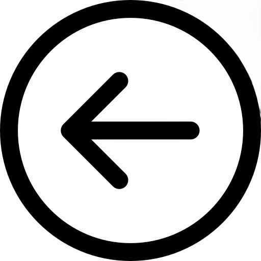

Reflexión
Aprendizajes, aciertos y dificultades
Este semestre en la Voca 3 fue todo un reto, pero me dejó una muy buena experiencia. Al principio se me hizo pesado agarrarle el ritmo a la escuela y adaptarme a las materias, pero conforme pasó el tiempo me fui acoplando. Mi mayor acierto fue aprender a ser más organizado y echarle ganas para no quedarme atrás. En la parte de los aprendizajes, lo que más me gustó fue que nos enseñaron a usar Excel; aprendí desde los conceptos básicos y el manejo de datos, hasta cómo meter fórmulas y hacer gráficas para que la información se entienda bien. También aprendimos HTML para crear páginas web desde cero, lo cual se me hizo bien interesante porque entiendes cómo funciona el internet. Claro que tuve mis dificultades, porque al principio me costaba un buen que las fórmulas de Excel salieran a la primera o que el código de HTML no tuviera errores, y a veces me frustraba. Pero practicando le fui entendiendo y logré pasar todo bien. En conclusión, siento que fue un semestre pesado pero muy valioso, porque me llevo conocimientos reales que sí me van a servir y me siento más preparado